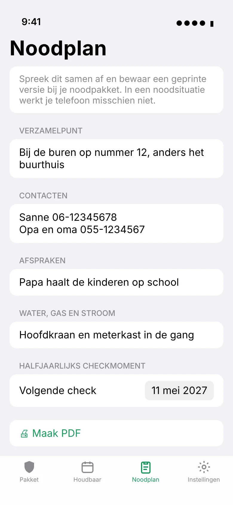
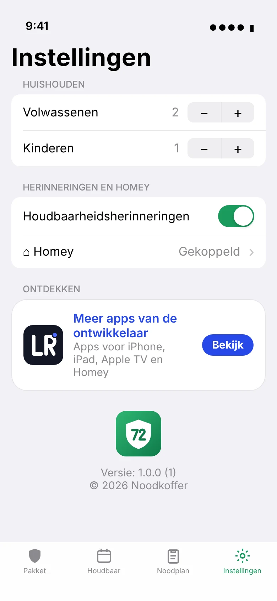

Je noodpakket, altijd compleet en nooit over datum.
Noodkoffer helpt je een noodpakket samen te stellen volgens het advies van de overheid, waarschuwt voordat water, batterijen of medicijnen verlopen en zet je noodplan klaar, ook op papier.
Gratis voor iPhone, iPad en Android · geen account · je gegevens blijven van jou
Alles voor de eerste drie dagen
Valt de stroom, het water of internet uit, dan moet je je de eerste 72 uur zelf kunnen redden. Noodkoffer maakt van die lijst een pakket dat je echt bijhoudt.
Checklist op maat
Volgens Denk vooruit, berekend voor jouw huishouden: 3 liter water per persoon per dag en €70 contant per volwassene.
Houdbaarheid in de gaten
Een herinnering 30 en 7 dagen voordat iets verloopt. Scan de datum gewoon van de verpakking.
Noodplan op papier
Verzamelpunt, contacten en afspraken. Print het als PDF, want in een noodsituatie werkt je telefoon misschien niet.
Halfjaarlijks checkmoment
Twee keer per jaar een seintje om je pakket na te lopen en de powerbank op te laden.
Widget
Op je beginscherm of toegangsscherm zie je hoe compleet je pakket is en wat als eerste verloopt.
Privé en offline
Geen account en geen tracking. Je pakket staat op je eigen toestel (en op iPhone in je eigen iCloud) en werkt zonder internet.
Zo ziet het eruit
Rustig, overzichtelijk en in licht en donker.


Ook op Android
Dezelfde checklist, herinneringen, het noodplan als PDF en een widget, nu ook voor Android 8 en nieuwer. Je downloadt de app hier als APK.
Elke update is met dezelfde sleutel ondertekend en installeert over de vorige versie heen.
- 1. Download
noodkoffer.apkop je telefoon. - 2. Open het bestand en sta installeren uit deze bron toe.
- 3. Bij een nieuwe versie doe je hetzelfde: de update installeert over de oude heen en je gegevens blijven bewaard.
Wat zit erin?
De basis uit het advies van de overheid. Je kunt zelf items toevoegen.
- Drinkwater3 liter per persoon per dag
- Houdbaar etenvoor 3 dagen, zonder koelkast
- Medicijnenje eigen medicatie voor minstens 3 dagen
- EHBO-doospleisters, verband, ontsmettingsmiddel
- Zaklamp en batterijenliefst een opwindmodel
- Noodradioop batterijen of met opwinder
- Powerbankvolledig opgeladen
- Contant geld€70 per volwassene, €30 per kind
- Kopie van ID-bewijzenen belangrijke papieren
- Dekens en warme kledingeen per persoon
- Kaarsen en lucifersnooit onbeheerd laten branden
- Hygiënewc-papier, vuilniszakken, handgel
Meer over voorbereiden lees je op denkvooruit.nl. Noodkoffer is een onafhankelijke app en geen app van de overheid.
Veelgestelde vragen
Wat kost Noodkoffer?
Niets. De app is gratis, zonder advertenties of abonnement. Wil je de ontwikkeling steunen, dan kan dat met een vrijwillige donatie.
Heb ik een account nodig?
Nee. Je pakket staat op je toestel. Op iPhone en iPad wordt het via je eigen iCloud gesynchroniseerd.
Is er een Android-versie?
Ja. Download de APK hierboven. Elke nieuwe versie is met dezelfde sleutel ondertekend, dus een update installeer je gewoon over de vorige heen; je gegevens blijven staan.
Werkt het zonder internet?
Ja. Checklist, houdbaarheid en noodplan werken volledig offline. Print je noodplan ook als PDF voor bij het pakket.